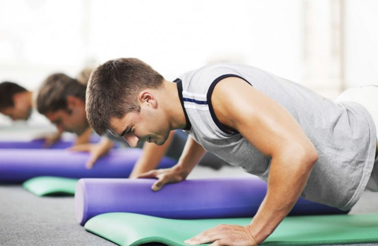

<div class="event-info">
 <div>
  <p>پیلاتس یا پیلاتز یا پیلاتیس (به انگلیسی: Pilates)، نوعی سیستم آمادگی جسمانی روحی است که در اوایل قرن بیستم توسط یوزف پیلاتس ابداع شد و در آلمان، بریتانیا و ایالات متحده آمریکا مورد توجه قرار گرفت.</p>
  
  <p>پیلاتس به مجموعه‌ای از تمرینات ورزشی تخصصی اطلاق می‌شود که بر بدن و ذهن فرد تأثیر گذاشته و ضمن بالا بردن قدرت و استقامت تمام اعضای بدن، عمقی‌ترین عضلات بدن را مورد هدف قرار می‌دهد.

تمرینات پیلاتس عبارت از تلاش برای تمرکز فکر و درایت فرد برروی عضلات بدن و چگونگی و عملکرد آنهاست. به مرور زمان و با اجرای مکرر حرکات، ذهن انسان بدن را بهتر درک می‌کند و آن را توانمندتر و متعادل تر می‌سازد. همچنین حرکات پیلاتس عضلات و مفاصلی را مورد هدف قرار می‌دهد که در فعالیت‌های روزانه درگیر هستند، مانند: نشستن، راه رفتن، حمل کردن بار، خم وراست شدن. با تمرینات ورزشی پیلاتس طرز صحیح انجام حرکات روزانه در بدن ثبت می‌شود. پیلاتس حرکات ورزشی را به شکلی آموزش می‌دهد که مانع بروز صدمات ورزشی گردد.</p>
 </div>
</div>